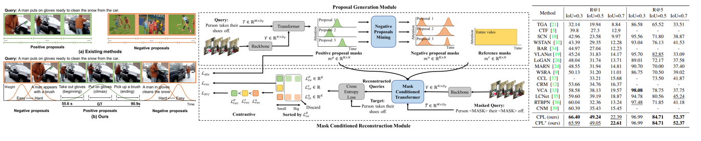

Yanjie Huang
Currently I am a master student at School of Integrated Circuits and Electronics, Beijing Institute of Technology (BIT), where I work on System on Chip (SoC) design, advised by Assist. Prof. Weijiang Wang . In 2021/03~2022/03, I was an intern at Multimedia Information Processing Lab (MIPL) at Peking University, advised by Assist. Prof. Yang Liu, doing research on computer vision. I did my bachelor at School of Information and Electronics, Beijing Institute of Technology, majoring in Electronics and Information Engineering.
Research&Publications

Minghang Zheng , Yanjie Huang , Qingchao Chen , Yuxin Peng , Yang Liu
Project Page | Paper | Cite | Code
This work was done during my internship at MIPL.
Temporal sentence grounding aims to detect the most salient moment corresponding to the natural language query from untrimmed videos. As labeling the temporal boundaries is labor-intensive and subjective, the weakly-supervised methods have recently received increasing attention. Most of the existing weakly-supervised methods generate the proposals by sliding windows, which are content-independent and of low quality. Moreover, they train their model to distinguish positive visual-language pairs from negative ones randomly collected from other videos, ignoring the highly confusing video segments within the same video. In this paper, we propose Contrastive Proposal Learning(CPL) to overcome the above limitations. Specifically, we use multiple learnable Gaussian functions to generate both positive and negative proposals within the same video that can characterize the multiple events in a long video. Then, we propose a controllable easy to hard negative proposal mining strategy to collect negative samples within the same video, which can ease the model optimization and enables CPL to distinguish highly confusing scenes. The experiments show that our method achieves state-of-the-art performance on Charades-STA and ActivityNet Captions datasets.

Minghang Zheng , Yanjie Huang , Qingchao Chen , Yang Liu
Project Page | Paper | Cite | Code | Poster
This work was done during my internship at MIPL. This method has been patented in China.
Video moment localization aims at localizing the video segments which are most related to the given free-form natural language query. The weakly supervised setting, where only video level description is available during training, is getting more and more attention due to its lower annotation cost. Prior weakly supervised methods mainly use sliding windows to generate temporal proposals, which are independent of video content and low quality, and train the model to distinguish matched video-query pairs and unmatched ones collected from different videos, while neglecting what the model needs is to distinguish the unaligned segments within the video. In this work, we propose a novel weakly supervised solution by introducing Contrastive Negative sample Mining (CNM). Specifically, we use a learnable Gaussian mask to generate positive samples, highlighting the video frames most related to the query, and consider other frames of the video and the whole video as easy and hard negative samples respectively. We then train our network with the Intra-Video Contrastive loss to make our positive and negative samples more discriminative. Our method has two advantages: (1) Our proposal generation process with a learnable Gaussian mask is more efficient and makes our positive sample higher quality. (2) The more difficult intra-video negative samples enable our model to distinguish highly confusing scenes. Experiments on two datasets show the effectiveness of our method.
Projects & Competitions
UAV project leader & Core member of Operation and Test Group at BIT Dream Chaser Robotics Team.
1.Responsible for training and maintanous of UAV (DJI M600 pro with E-2000 power system).
2.Adjust DJI A3 & A3-pro flight control system.
3.Monitor the battlefield and provide location information to help tactical command during matches.
This project was done during the 2020 GEARS Online Summer Program, North Carolina State University, supervised by Prof. Andre Mazzoleni.
1.Use cellphones to collect visual data for TSOP (Tethered Systems Observation Platform). Develope and validate a robust Object Detection Algorithm (ODA) in MATLAB.
2.Utilize Stereo Camera Calibrator App to remove lens distortion and reprojection errors. Convert the RGB image into binary image and label the connected region to get the smallest boxes.
3.Figure out the relationship between different coordinates to convert the pixel coordinates into world coordinates. Reconstruct space using inverse perspective transformation and test ODA.

This project is my undergraduate graduation project, supervised by Assist. Prof. Weijiang Wang. The majority of work is listed as follows:
1.The hardware algorithm guided by the pipeline theory is proposed, enabling the method to load data and do calculation at the same time in the convolution and pooling layers of CNN, improving computing efficiency.
2.The domestic PGL22G FPGA implementation platform with less power consumption is used, and the hardware realization algorithm is deployed. Additionally, compared with other methods using High Level Synthesis (HLS), this work is highly portable. Moreover, the algorithm is designed with floating-point decimal conversion, so that it can complete the multiplication operation without using a Digital Signal Processor (DSP). The experiments demonstrate that the hardware implementation algorithm can accelerate the software algorithm efficiently with fewer resources. Compared with the method using larger embedded platform which accelerates the same software network, its power consumption and Look Up Table (LUT) resource usage decrease.
3.Use Python and Verilog HDL, together with the OV5640 webcam module and the HDMI display module, completing the construction of a CNN-based software and hardware collaborative handwritten digital recognition system, implementing continuous real-time recognition of handwritten digital images.